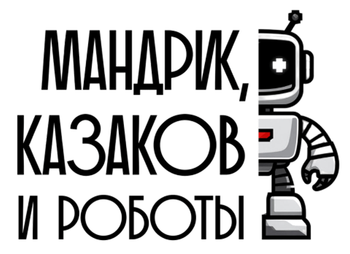

Рабочая среда для ИИ-агентов
Пошагово установите и настроите инструмент для работы с ИИ-агентами: Cursor, Qwen CLI или аналогичный вариант для старта.

Онлайн-практикум по разработке ИИ-агентов
Подойдет даже если у вас нет технического бэкграунда: шаг за шагом вы создадите первые навыки для вашего агента и получите обратную связь от опытных экспертов.
Это не лекция про ИИ, а практика с понятным маршрутом
до работающего результата за один день.
Результат в день участия
На практикуме вы не будете бесконечно слушать теорию. Вы последовательно пройдете все ключевые шаги и к концу дня получите понятный, осязаемый результат.
Пошагово установите и настроите инструмент для работы с ИИ-агентами: Cursor, Qwen CLI или аналогичный вариант для старта.
Научитесь создавать навык, который превращает один документ в другой: конспект в тезисы, статью в пост, вопросы в тест.
Освоите сценарий, где ИИ работает вместе со скриптом и помогает автоматизировать прикладные задачи.
Вместе с командой соберете рабочий прототип и покажете его на защите.
Разберетесь в анатомии навыков и поймете, как самостоятельно усложнять решения после практикума.
После практикума у вас останется не только понимание, но и первый результат, который можно развивать и применять в работе.
Старт с нуля
Вам не нужно быть программистом или разбираться в коде: мы проведем вас по понятному маршруту от первого шага до рабочего результата. За 4 часа вы соберете своего первого ИИ-агента и поймете, как продолжать самостоятельно.
Кому подойдет
Формат особенно полезен тем, кто хочет освоить работу с ИИ-агентами без тяжелого технического входа и сразу увидеть, как это применять в реальных задачах.
Без длинной подготовки, бесконечных видео и ощущения, что сначала нужно изучить все.
Ищете способ быстрее перерабатывать тексты, автоматизировать рутину и собирать полезные решения для работы.
Чтобы понять, как это работает на деле, а не оставаться на уровне общих разговоров про ИИ.
Чтобы не просто интересоваться темой, а выйти с конкретным навыком и ИИ-агентом.
Подходит управленцам, специалистам по продажам, маркетингу, HR, финансам — всем, кто занимается интеллектуальной работой.
Что будет внутри
Разберемся, чем отличаются Cursor, Qwen CLI, Anti-Gravity и похожие решения, и выберем понятный вариант для старта.
Поймете, как ИИ обрабатывает запросы, из чего состоит навык и как превращать удачный промпт в повторяемое решение.
Увидите, как ИИ можно связать со скриптом: конвертировать файлы, готовить PDF, презентации или форматы для LMS.
Вместе с командой доведете идею до прототипа, подготовите короткую демонстрацию и покажете результат.
Программа
Если вы никогда не ставили агентские системы себе на компьютер, боитесь запутаться, нужен ли VPN, будет ли все работать именно на вашем компьютере — этот час для вас.
Если вы опытный и сможете поставить все сами — можно пропустить этот час.
Разберемся, как устроен практикум, как будет организована работа в микрогруппах и какой инструмент лучше выбрать новичку.
Разберемся, как устроены навыки, и сразу соберем первый рабочий вариант для преобразования одного текста в другой.
Перейдем к следующему уровню: разберемся, что делать, когда одного текста недостаточно и нужен запуск скрипта.
Команды дорабатывают решение до законченного микропроекта, готовят короткую демонстрацию и показывают, что получилось.
После практикума
Уже после практикума вы сможете использовать этот подход в типовых рабочих сценариях, связанных с управлением, переговорами, текстами, контентом и внутренними процессами.
Собирает апдейты из задач, встреч и переписок в понятную картину: что буксует, кто владелец, где нужен управленческий сигнал.
Готовит досье на контрагента, карту интересов сторон, аргументы, возможные возражения и сценарии ответа на неудобные вопросы.
Превращает данные, заметки и черновые идеи в структуру презентации: логика истории, ключевые слайды, тезисы спикера и визуальные акценты.
Собирает из таблиц, комментариев и статусов короткий executive summary с отклонениями, рисками, причинами и предложенными действиями.
Сравнивает резюме с профилем роли, объясняет скоринг кандидатов, подсвечивает красные флаги и готовит вопросы для интервью.
Помогает анализировать результаты опросов, обратную связь и перформанс-данные, чтобы находить зоны риска, выгорание и точки роста команд.
Берет на себя повторяющиеся операции: протоколы встреч, постановку задач, контроль дедлайнов, напоминания и подготовку регулярных сводок.
Помогает быстро готовить посты, письма, инструкции, анонсы, FAQ и обучающие материалы в нужном стиле и под разные аудитории.
Вы сами можете выбрать ту рутину, которую захотите автоматизировать с помощью ИИ-агента.
Формат
Общий поток может быть большим, но основной опыт устроен через микрогруппы по 5–7 человек. Так проще задавать вопросы, пробовать решения, сверяться с другими участниками и быстрее проходить сложные моменты.
Даже если что-то не получится с первого раза, вы не выпадаете из процесса: можно двигаться дальше с командой, опираться на тренеров и видеть решения других участников.
Кто ведет практикум
Сооснователь "Мандрик, Казаков и роботы"
Отзывы
Очень понравилось наполнение курса, его структура и логичность. Владимир как всегда объясняет сложное простыми словами.
Мария очень хвалит обучение, говорит, что очень полезно и многообещающе. Подскажите, пожалуйста, может быть, есть запись? Я бы тоже очень хотела посмотреть.
Благодарю вас за возможность поучаствовать в вебинаре, было полезно. На вебинар также звала одного из своих руководителей, которые обычно подбирают спикеров. Ведущий понравился, есть вероятность, что когда мы будем планировать какие-либо обучения в данной сфере, то обратимся.
В целом очень актуально, что мы послушали именно про агентов, так как промптинга и в целом преподаем сами. Понимаем, что тема сложная для обучения вдвойне. Пришли к мнению, что у вас спикер со стальными нервами. Он так спокойно всем помогал установить все 👍
С чем уйдете
Даже если сейчас вы только присматриваетесь к теме ИИ-агентов и навыков, после практикума у вас уже будет база, на которую можно опираться дальше.
Готовы пройти этот путь?
Без технического бэкграунда и долгой подготовки.
Билет
За один день вы установите среду, создадите 2 навыка для ИИ, поработаете в команде и защитите свой первый микропроект.
После отправки заявки вы резервируете участие в практикуме и получаете место в потоке.
Оставьте контакты, и мы подтвердим бронь.
FAQ
Да. Практикум специально рассчитан на участников без технического бэкграунда. Весь путь построен так, чтобы вы могли войти в тему через практику и понятные шаги.
Нет. Установка и первичная настройка среды входят в программу практикума. Первый час как раз посвящен тому, чтобы все запустить вместе и проверить в работе.
Ноутбук или компьютер, стабильный интернет и готовность работать руками вместе с ведущими и командой.
Нет. Теория дается короткими блоками и только там, где она помогает сразу перейти к практике. Основной акцент — на действиях, тестировании и результате.
Формат построен так, чтобы вы не оставались один на один с проблемой. Можно опираться на тренеров, ассистентов и свою команду.
Да. Работа строится в микрокомандах, которые помогают участникам двигаться быстрее и увереннее.
Да, но в прикладном и понятном формате. Смысл не в том, чтобы сделать из вас разработчика за один день, а в том, чтобы показать запуск простых и полезных решений вместе с ИИ.
К концу дня у вас будет установленная среда, 2 созданных навыка, опыт командной разработки и готовый микропроект.
Да. Практикум построен вокруг прикладных задач: трансформация документов, генерация контента, экспорт в PDF, подготовка материалов для LMS.
Пора действовать!
Вместо долгих попыток разобраться в одиночку вы пройдете понятный маршрут вместе с ведущими и командой: установите среду, создадите 2 навыка и соберете первый микропроект.
26 мая · Онлайн · 10:00–14:00